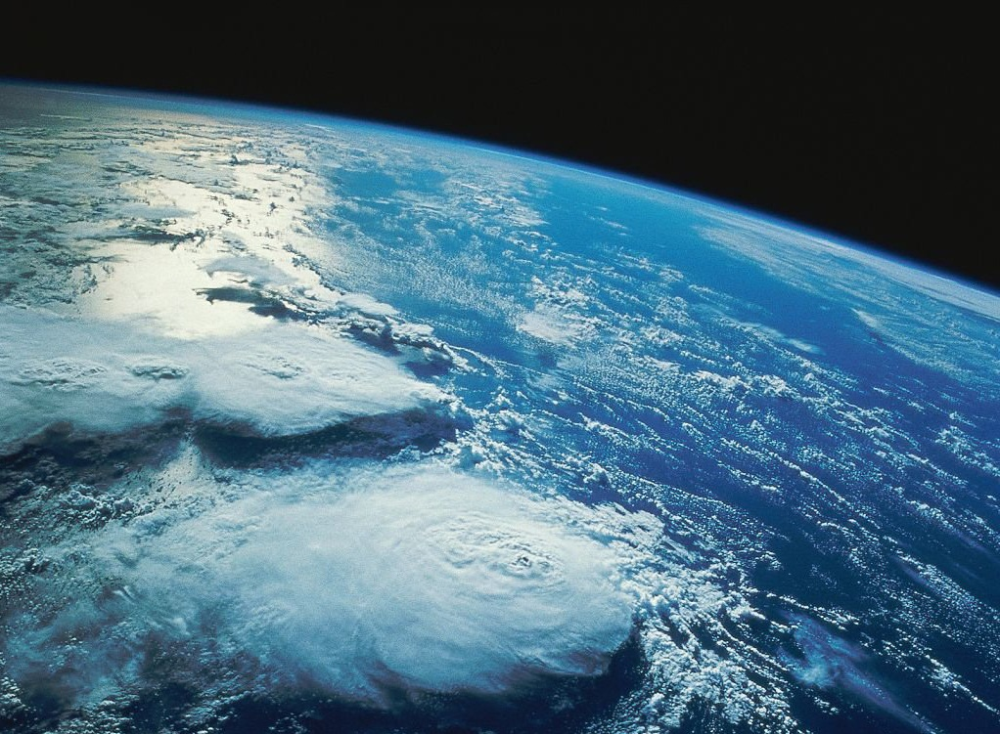
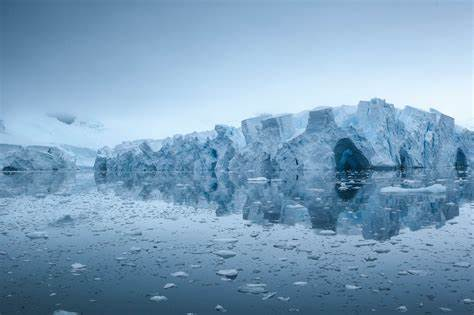
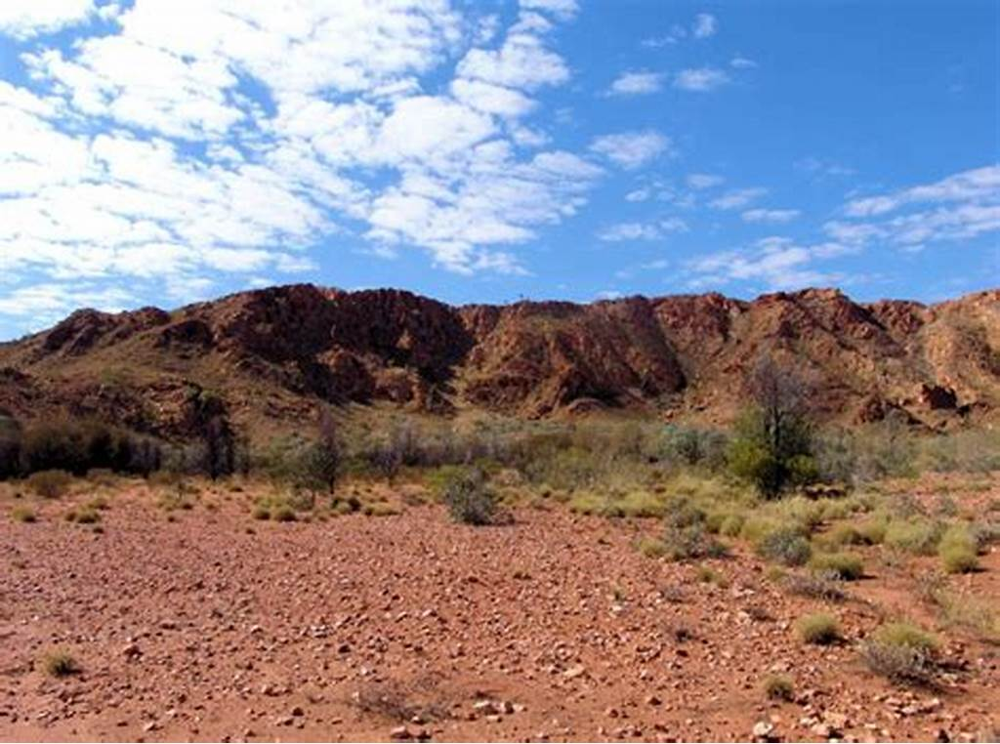
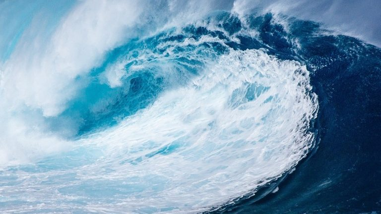
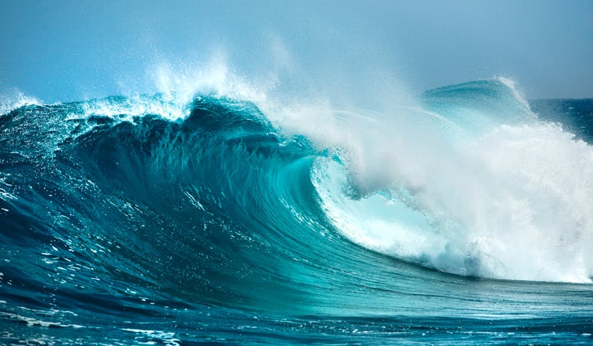
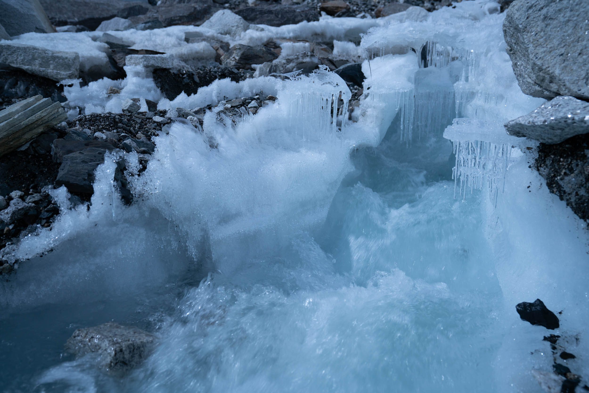
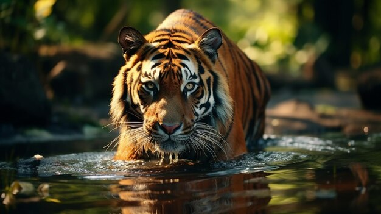
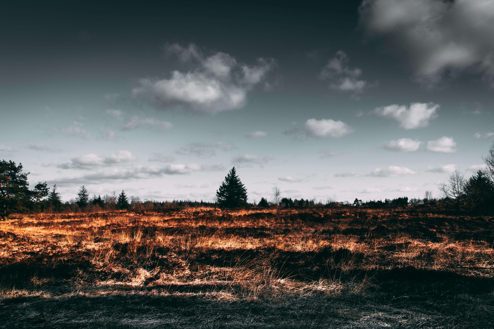
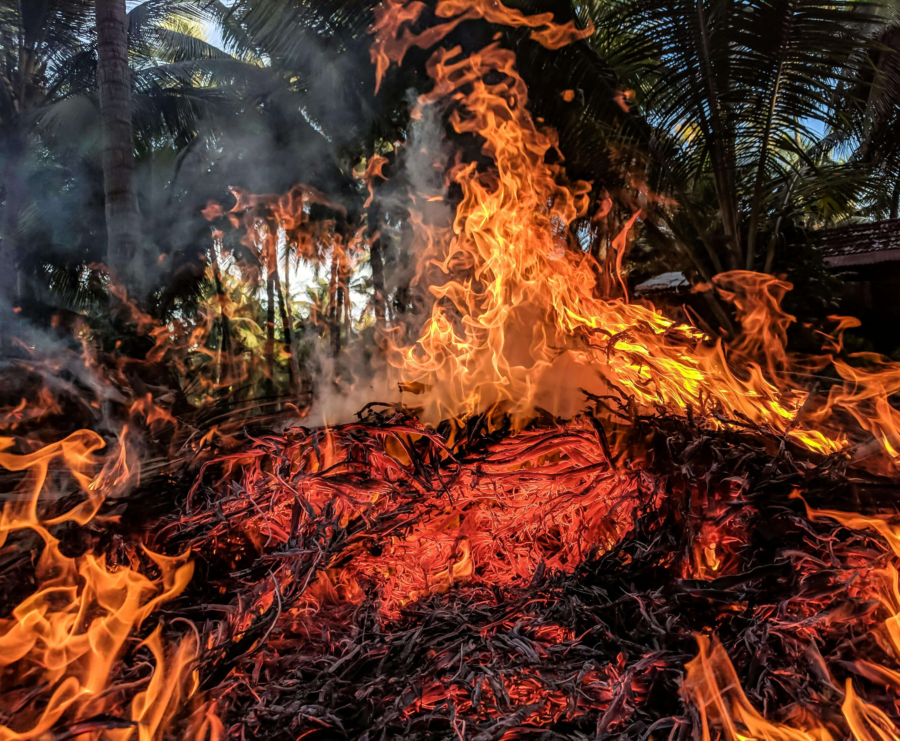
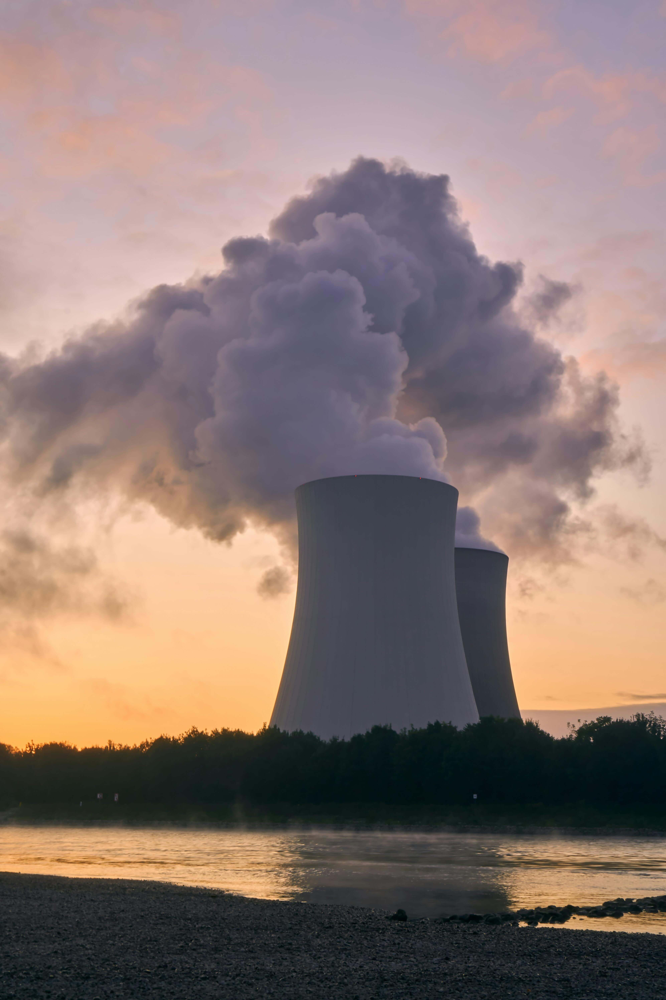

Web
Web
Learn more about drought, what causes it, and how we can support those most impacted
Terra Web
Atmosphere

Hydrosphere

Cryosphere

Geosphere

Biosphere

The thin layer made up of a mixture of gases and particles suspended in the air that surround the Earth (predominantly N2, O2, Ar, CO2 and H2O)

A sphere that includes the liquid ocean, inland water bodies and groundwater

A subset of the Hydrosphere that consists of frozen water
A sphere that includes the solid Earth; the core, mantle, crust and soil layers

A sphere that includes all of Earth’s organisms, including humans and matter that has not yet decomposed
The interconnections between Earth’s systems
The Earth's systems—geosphere, biosphere, cryosphere, hydrosphere, and atmosphere—are deeply interconnected, meaning changes in one system can significantly affect the others. Here's how these systems interact with each other:
CONNECT TWO SIDEBAR
TO EXPLORE INTERCONNECTIONS
Atmosphere and Hydrosphere
Water from the hydrosphere evaporates into the atmosphere, where it forms clouds and eventually returns as precipitation. This cycle regulates temperature, weather patterns, and climate, affecting all life on Earth.
Atmosphere and Cryosphere
Ice and snow in the cryosphere reflect sunlight, helping to regulate Earth’s temperature. When ice melts, it reduces the reflectivity (albedo) of Earth's surface, leading to increased absorption of solar energy and further warming—a feedback loop that affects global climate
Temperature changes in the atmosphere can cause melting or formation of ice in the cryosphere. Atmospheric greenhouse gases can trap heat, leading to glacial melting and rising sea levels
Atmosphere and Cryosphere (Ice and Snow)
Change in the Atmosphere: Increased greenhouse gas emissions from human activities (e.g., burning fossil fuels) lead to global warming.
Impact on the Cryosphere: Warming temperatures cause polar ice caps, glaciers, and sea ice to melt at an accelerated rate.
Impact on Other Systems:
Hydrosphere: Melting ice contributes to rising sea levels, which can lead to coastal erosion and flooding.
Geosphere: Thawing permafrost (frozen ground) can destabilize land, leading to landslides and altered landscapes.
Biosphere: Loss of ice habitat affects species adapted to cold environments, such as polar bears and penguins
Atmosphere and Geosphere
Volcanic eruptions from the geosphere release gases and ash into the atmosphere, which can influence climate by blocking sunlight and altering temperatures. Over time, weathering of rocks in the geosphere also absorbs atmospheric carbon dioxide, impacting the carbon cycle
Weather patterns in the atmosphere influence erosion and sediment transport in the geosphere. Wind and precipitation shape the landscape over time, while atmospheric conditions also affect soil formation and nutrient cycles.
Volcanic Eruptions (Geosphere) and Atmospheric Composition (Atmosphere)
Change in the Geosphere: Volcanic eruptions release ash, sulfur dioxide (SO2), and other gases into the atmosphere.
Change in the Geosphere:
Climate: Short-term cooling can disrupt weather patterns and reduce global temperatures.
Biosphere: Changes in temperature and sunlight can affect plant growth and animal behavior.
Atmosphere and Biosphere
Plants in the biosphere absorb carbon dioxide from the atmosphere and release oxygen through photosynthesis, playing a crucial role in maintaining atmospheric balance. Animals, in turn, breathe in oxygen and release carbon dioxide, creating a symbiotic relationship.
Deforestation (Biosphere) and Carbon Cycle (Atmosphere)
Change in the Biosphere: Large-scale deforestation reduces the number of trees and plants.
Impact on the Atmosphere: Trees absorb carbon dioxide (CO2) during photosynthesis. Fewer trees mean less CO2 is removed from the atmosphere, leading to increased greenhouse gases.
Impact on Other Systems:
Hydrosphere: Changes in vegetation can affect the water cycle by altering local precipitation patterns and increasing runoff.
Geosphere: Erosion rates may increase due to the loss of plant roots that stabilize soil.
Hydrosphere and Atmosphere
Water from the hydrosphere evaporates into the atmosphere, where it forms clouds and eventually returns as precipitation. This cycle regulates temperature, weather patterns, and climate, affecting all life on Earth.
Hydrosphere and Cryosphere
The cryosphere, which includes ice caps and glaciers, influences sea levels and the availability of freshwater. Melting ice from the cryosphere flows into the hydrosphere, impacting ocean currents and ecosystems.
Melting Glaciers (Cryosphere) and Ocean Circulation (Hydrosphere)
Change in the Cryosphere: Glaciers and ice sheets are melting, adding large amounts of freshwater to the oceans.
Impact on the Hydrosphere: Freshwater influx can alter ocean salinity and density, impacting ocean circulation patterns.
Impact on the Hydrosphere:
Climate: Changes in ocean circulation can influence global climate patterns, such as the Gulf Stream's impact on European climate.
Biosphere: Altered ocean currents can affect marine ecosystems and species distributions.
Hydrosphere and Geosphere
The geosphere interacts with the hydrosphere through processes like erosion, which transports minerals and nutrients into bodies of water, and tectonic activity, which can create new waterways or alter existing ones.
Erosion (Geosphere) and Water Quality (Hydrosphere)
Change in the Geosphere: Erosion from activities like mining, construction, or deforestation can lead to the loss of soil and rock.
Impact on the Hydrosphere: Eroded material (sediment) can be washed into rivers and lakes, impacting water quality.
Impact on the Hydrosphere:
Biosphere: Increased sedimentation can smother aquatic habitats, affecting fish and other organisms.
Atmosphere: Dust from erosion can become airborne, affecting air quality and potentially influencing climate patterns.
Hydrosphere and Biosphere
The hydrosphere provides water necessary for all living organisms. Aquatic ecosystems, such as oceans, rivers, and lakes, support a vast range of biodiversity, and changes in water quality or availability can drastically affect life.
Wetland Drainage (Hydrosphere) and Biodiversity (Biosphere)
Change in the Hydrosphere: Draining wetlands for agriculture or development removes standing water and alters wetland ecosystems.
Impact on the Biosphere: Wetlands provide critical habitat for a variety of species. Their loss can lead to declines in biodiversity.
Impact on Other Systems:
Geosphere: Wetland drainage can increase soil erosion and sedimentation in nearby water bodies.
Atmosphere: Wetlands act as carbon sinks; their loss can lead to increased atmospheric CO2 levels.
Cryosphere and Atmosphere
Ice and snow in the cryosphere reflect sunlight, helping to regulate Earth’s temperature. When ice melts, it reduces the reflectivity (albedo) of Earth's surface, leading to increased absorption of solar energy and further warming—a feedback loop that affects global climate
Temperature changes in the atmosphere can cause melting or formation of ice in the cryosphere. Atmospheric greenhouse gases can trap heat, leading to glacial melting and rising sea levels
Atmosphere and Cryosphere (Ice and Snow)
Change in the Atmosphere: Increased greenhouse gas emissions from human activities (e.g., burning fossil fuels) lead to global warming.
Impact on the Cryosphere: Warming temperatures cause polar ice caps, glaciers, and sea ice to melt at an accelerated rate.
Impact on Other Systems:
Hydrosphere: Melting ice contributes to rising sea levels, which can lead to coastal erosion and flooding.
Geosphere: Thawing permafrost (frozen ground) can destabilize land, leading to landslides and altered landscapes.
Biosphere: Loss of ice habitat affects species adapted to cold environments, such as polar bears and penguins
Cryosphere and Hydrosphere
The cryosphere, which includes ice caps and glaciers, influences sea levels and the availability of freshwater. Melting ice from the cryosphere flows into the hydrosphere, impacting ocean currents and ecosystems.
Melting Glaciers (Cryosphere) and Ocean Circulation (Hydrosphere)
Change in the Cryosphere: Glaciers and ice sheets are melting, adding large amounts of freshwater to the oceans.
Impact on the Hydrosphere: Freshwater influx can alter ocean salinity and density, impacting ocean circulation patterns.
Impact on the Hydrosphere:
Climate: Changes in ocean circulation can influence global climate patterns, such as the Gulf Stream's impact on European climate.
Biosphere: Altered ocean currents can affect marine ecosystems and species distributions.
Cryosphere and Geosphere
Cryosphere and Biosphere
Geosphere and Atmosphere
Volcanic eruptions from the geosphere release gases and ash into the atmosphere, which can influence climate by blocking sunlight and altering temperatures. Over time, weathering of rocks in the geosphere also absorbs atmospheric carbon dioxide, impacting the carbon cycle
Weather patterns in the atmosphere influence erosion and sediment transport in the geosphere. Wind and precipitation shape the landscape over time, while atmospheric conditions also affect soil formation and nutrient cycles.
Volcanic Eruptions (Geosphere) and Atmospheric Composition (Atmosphere)
Change in the Geosphere: Volcanic eruptions release ash, sulfur dioxide (SO2), and other gases into the atmosphere.
Change in the Geosphere:
Climate: Short-term cooling can disrupt weather patterns and reduce global temperatures.
Biosphere: Changes in temperature and sunlight can affect plant growth and animal behavior.
Geosphere and Hydrosphere
The geosphere interacts with the hydrosphere through processes like erosion, which transports minerals and nutrients into bodies of water, and tectonic activity, which can create new waterways or alter existing ones.
Erosion (Geosphere) and Water Quality (Hydrosphere)
Change in the Geosphere: Erosion from activities like mining, construction, or deforestation can lead to the loss of soil and rock.
Impact on the Hydrosphere: Eroded material (sediment) can be washed into rivers and lakes, impacting water quality.
Impact on the Hydrosphere:
Biosphere: Increased sedimentation can smother aquatic habitats, affecting fish and other organisms.
Atmosphere: Dust from erosion can become airborne, affecting air quality and potentially influencing climate patterns.
Geosphere and Cryosphere
Geosphere and Biosphere
The geosphere provides the foundation for the biosphere by offering land for plants to grow and habitats for animals. Soil formation in the geosphere affects plant life, which in turn influences the types of organisms that can thrive in a given area
Biosphere and Atmosphere
Plants in the biosphere absorb carbon dioxide from the atmosphere and release oxygen through photosynthesis, playing a crucial role in maintaining atmospheric balance. Animals, in turn, breathe in oxygen and release carbon dioxide, creating a symbiotic relationship.
Deforestation (Biosphere) and Carbon Cycle (Atmosphere)
Change in the Biosphere: Large-scale deforestation reduces the number of trees and plants.
Impact on the Atmosphere: Trees absorb carbon dioxide (CO2) during photosynthesis. Fewer trees mean less CO2 is removed from the atmosphere, leading to increased greenhouse gases.
Impact on Other Systems:
Hydrosphere: Changes in vegetation can affect the water cycle by altering local precipitation patterns and increasing runoff.
Geosphere: Erosion rates may increase due to the loss of plant roots that stabilize soil.
Biosphere and Hydrosphere
The hydrosphere provides water necessary for all living organisms. Aquatic ecosystems, such as oceans, rivers, and lakes, support a vast range of biodiversity, and changes in water quality or availability can drastically affect life.
Wetland Drainage (Hydrosphere) and Biodiversity (Biosphere)
Change in the Hydrosphere: Draining wetlands for agriculture or development removes standing water and alters wetland ecosystems.
Impact on the Biosphere: Wetlands provide critical habitat for a variety of species. Their loss can lead to declines in biodiversity.
Impact on Other Systems:
Geosphere: Wetland drainage can increase soil erosion and sedimentation in nearby water bodies.
Atmosphere: Wetlands act as carbon sinks; their loss can lead to increased atmospheric CO2 levels.
Biosphere and Cryosphere
Biosphere and Geosphere
The geosphere provides the foundation for the biosphere by offering land for plants to grow and habitats for animals. Soil formation in the geosphere affects plant life, which in turn influences the types of organisms that can thrive in a given area

Climate
Droughts, floods will become more frequent and severe as our planet warms and climate changes.

What is drought?
Learn more about drought, what causes it, and how we can support those most impacted
What Causes Floods?
They are mostly caused by rivers, but floods can also occur from flooding lakes and seas

What causes cyclones?
A cyclone forms in an area of low pressure. This area of low pressure draws in surrounding winds.
They are mostly caused by rivers, but floods can also occur from flooding lakes and seas
A cyclone forms in an area of low pressure. This area of low pressure draws in surrounding winds.